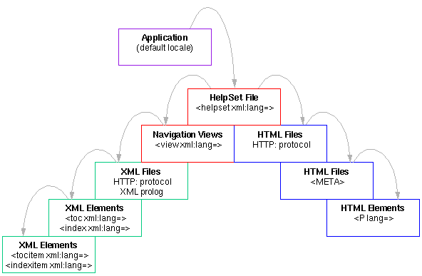
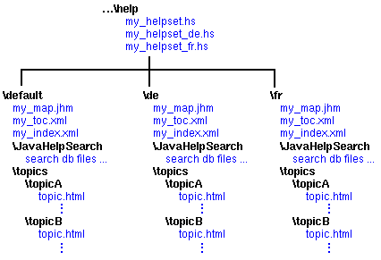

Described in Localizing Help Presentation
Described in Localizing XML Data
The portal to all JavaHelp system help information is the helpset file which defines the helpset. The helpset is the set of data that constitutes your help system and includes:
The following diagram shows the different levels in the JavaHelp system where the locale can be set and localization can occur, starting with the host application and moving into the helpset. Changes to locale are propagated down the hierarchy, with a change at each level overriding the locale set above it.

Legend:
Described in Localizing Help Presentation
 Described in the
following sections
Described in the
following sections
Described in Localizing XML Data
 Described in Localizing HTML Data
Described in Localizing HTML Data
The locale of a helpset is usually set through the helpset file. The locale for the entire helpset can be specified through the helpset file, although portions of it can be be selectively overridden in the data files.
When the application activates the JavaHelp system, the
application uses the HelpSet.findHelpSet method to
find the correct helpset file and return its location
(URL). The full name of the helpset file is constructed
based on the name of the helpset file specified as
an argument to HelpSet.findHelpSet, and the
locale based on either the system default locale
or a locale specified as an optional argument.
The name of the locale-specific helpset file is constructed and then searched for in the following order (from most to least specific):
.hs
.hs
.hs
.hs
.hs
.hs
.hs
The defaults are derived from the system with the Locale.getDefault
method. |
The helpset file can be used to control the locale of different aspects of the help system. The XML language controls used to set locale are discussed in more detail in Localizing XML Data.
The xml:lang attribute can be used within the
<helpset> tag to specify the locale of the
entire helpset (the other elements in the helpset
file automatically inherit the locale). For example:
<helpset xml:lang="fr">The locale specified for the helpset in this manner overrides any locale acquired from the system or the application. For this reason, it is the most reliable means for setting the helpset locale.
The locale of the <title> element is always
the same as locale of the helpset. Any xml:lang
attributes specified for the <title> element
are ignored.
The xml:lang attribute can also be used to change
the locale of the navigator views specified in the
<view> elements (for example, the
TOC and index). Note, however, that this
locale is overridden by any locale settings specified by
xml:lang attributes in the TOC and index
XML definition files, as described in XML Data.
The locale of the <label> element is always
the same as the locale of the containing view. Any
xml:lang attributes specified for
<label> elements are ignored.
The JavaHelp software makes it possible to simultaneously distribute multiple
localized helpsets (for example, German, French, and English). As described
above, the HelpSet.findHelpSet method determines
the correct helpset file based on the system's locale or as set by the application
using HelpBroker.setLocale(). You can include multiple, localized
helpset files and locate the appropriate version using this naming convention.
If you ship multiple locales, you will probably organize your help information a little differently than is described in Setting Up a JavaHelp System. The following diagram shows one way you can organize the help information by locale:

Note that the paths specified in the <data>
sections of the localized helpset
files must point to the appropriate locations. For
example:
<maps>
<mapref> location="de/Map.jhm" />
</maps>
<view>
<name>TOC</name>
<label>Holidays</label>
<type>javax.help.TOCView</type>
<data>de/HolidayTOC.xml</data>
</view>
JavaHelp system helpsets can be merged. The locale of a helpset is
maintained in a merge operation. For instance, if the
master helpset (locale en_US) is merged with
another Helpset (locale fr_FR), the locale of both
helpsets is maintained.
Map data should not be localized. If IDs (target attribute) are localized
they will no longer match the IDs used internally in the application.
 See also:
See also: